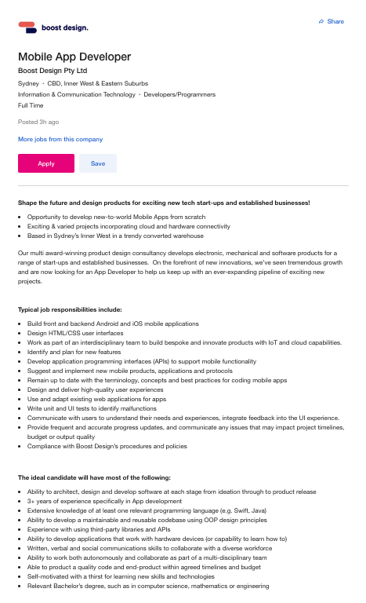

My Profile
Student Name:
Student Number:
Student Email Address:
Alexander Hutton
s3921239
s3921239@student.rmit.edu.au
I was born in Glasgow, Scotland. My father is Scottish, and my mother is English. As a child I moved between Scotland and England numerous times which resulted in an interrupted education. I completed my high school education in Cambridge, England in 1992. After completing high school, I managed to get a job as a database programmer using a technology that I don’t think exists anymore named dBase. In 1994 I emigrated to Perth, Australia with my family and have lived in Perth ever since. After arriving in Perth, I studied various industry certifications, including Microsoft Certified Systems Engineer, Cisco Certified Network Associate, VMware Certified Professional, NetApp Certified Storage Administrator, EMC Storage, EMC Avamar and Hitachi Storage Systems. I live with my wife and two youngest children, the older two live on their own now. I have a passion for fast motorcycles and currently own a BMW S1000 RR which is pictured below. I will often spend full days out on country roads with my bike, pushing it and myself to the limits.
The maximum speed I have had this bike up to is 317 KM/h on a racetrack which I don’t recommend to anyone that doesn’t want their whole body, especially their neck to hurt for 2 weeks afterwards. It takes a lot of physical effort to hold on and your head bounces around like a punch ball.


My interest in IT first started at the age of 10 when my father bought me a BBC Micro and a subscription to Input magazine. The magazine ran for 1 year between 1984 and 1985 and produced 52 weekly installments. It taught readers how to program in both basic and 8-bit assembly language. I found these both particularly easy to pick up and was soon programming my own simple games. From that point on I have had a huge interest in writing programs that make life easier for me. Since 2003, I have been employed in the infrastructure side of IT, working with everything from endpoints through to enterprise level storage, virtualisation, networking, and servers. As part of my experience in infrastructure, I have been involved in datacentre installations, monitoring, and maintaining hardware and software, project implementations and design work.
I chose to come to RMIT because I wanted to head back down the programming path and couldn’t get directly into university because my last official education was in 1992. I approached OUA who advised taking the first 2 units of the Bachelor of IT, then enrol in the Bachelor of IT if I pass them. This course was chosen as it had a reasonable amount of programming in it.
During my studies I am hoping to get a grounding in programming again. I have not done much of that in the last 10 years and am very rusty. I am also interested to see how others learn and work in teams. Once I complete the Bachelor of IT I would like to continue official education in programming.
My ideal job is a Mobile App Developer.
A link to an advertisement for the job is here:
Mobile App Developer.
An offline copy of the advert can be viewed here: 
This position is seeking an iOS and Android application developer. The position involves creating front and backend applications, interfaces using HTML and CSS, API's for mobile computing, and communicating with end users to understand their requirements and to obtain feedback on the product as it develops. Participation in projects and a team environment are a must. As with any role these days, compliance with company policies and procedures is also very important. What makes this position attractive to me is the variety of skills required and the diversity of the role along with the idea of creating an application that gets used to solve real problems
The skills required to perform this role include the ability to perform all the stages of software development from design right through to release, the ability to program at an exceptional level in at least 1 relevant programming language such as java or swift and to be able to create re-usable code in the form of Object-Oriented Programming. In addition, there is a requirement to have good written, verbal, and social communication skills, to be self-motivated and produce a high-quality product to budget and time constraints. The qualification requirements are to have a Bachelor's degree in a relevant subject including computer science, mathematics, or engineering. The advertisers are looking for a candidate with at least 3 years' experience in application development and experience using and integrating with third party APIs and libraries.
The skills required that I currently have are design skills. Although I have not performed this is a software development environment, I have worked on infrastructure projects where I have designed, developed, implemented, documented, and performed a hand over of various sizes either individually or as a member of a team. I believe I have good written, verbal, and social skills. I am self-motivated and always strive to produce work of the highest quality. I have a proven history of working within time and budget constraints during my time in IT and can't recall a time I have ever gone over either of them.
To build the skills and obtain the qualifications that I need to obtain my ideal job, I will complete the Bachelor of IT, then pursue further study in the field of programming. While I am obtaining the qualifications that I require, I will start creating mobile applications to begin creating a portfolio.
Myer-Briggs Test:
Learning Style Test:
Team Role Test:
After completing and reviewing the results of the tests, I can say that in relation to me, they are about 80% correct. The Myer-Briggs results show that I am introverted with intuitive, thinking, and prospecting traits. I enjoy thinking about things in depth, no matter what the subject. As stated, I do love to analyse patterns and notice discrepancies which at times makes me feel like I have obsessive compulsive disorder. I am and have always been a person that prefers to learn by doing. I am not satisfied knowing that if I tick the box, it will fix the issue, I want to know what ticking the box does "under the hood". I have been a team leader in my roles in the IT industry and have proven to be good at the role. I have always been very good at learning and understanding technology, to the point where I have also been technical leads in various different areas of IT, which is in line with what the team roles test indicates.
I think these results may influence by behaviour in a team where I will try and assume a lead role, whether that be as a team lead or a technical lead.
When forming a team, I should take this into account so that the team is not top heavy with similar team members and look for members that can fill other roles that compliment mine rather than compete against them.
Overview:
The project is to create a mobile application for some doctor’s services. This will provide a convenient and more time friendly way for people without emergencies to interact with the local General Practitioner. There may also be a benefit of reducing the cost of the consultations due to efficiency. The application will provide video and audio consultations, blood pressure readings, weight, and body mass data to the doctor. This information will be obtained through the use of external devices such as a smart watch and smart scales. It will allow prescriptions and referrals to be sent electronically and provide an online booking service.
Motivation:
I have many medical conditions that require medical appointments with my GP. Around 65% of my visits are for prescriptions or blood pressure checks. When I attend the surgery, I can wait anywhere from 10 minutes to an hour just to see the doctor. Once I get called by the doctor, I am out again in 10 minutes or under. If I include the time to travel to and from the surgery, it can take up to 2 hours of my day for a simple appointment. I have a few friends who do not live in the metropolitan area who also must travel more than 20 KM to see their doctor. I believe a mobile app like this will reduce the need to visit the doctor, save time and free the doctor’s surgery up for more pressing appointments.
Description
The product will be a mobile application that will run on Android or iOS. It will
integrate with smart watches and smart scales. The features will include the following:
- Online booking service – This will allow the patient to book appointments with the doctor and select what the appointment is for at the time of booking. This is like other applications on the market.
- Video and audio appointments – There will be an option to book a video or audio appointment with the doctor, although this will not be a requirement if the patient is requesting services that do not require immediate contact.
- Blood pressure – Blood pressure will be monitored via a smart watch and relayed back to the application. At the time of booking, this will be requested and sent to the doctor.
- Weight and body mass – There are two methods in which this can be collected, the first is using smart scales and the second is using a smart watch that provides the feature. Both methods will relay the information to the application and send it to the doctor at the time of the booking.
- Prescriptions – Prescriptions can be requested via the app if the patient is currently taking the requested medication. Once prepared, the prescription can be sent directly to a pharmacy or sent electronically to the patient to print out and present at a pharmacy.
- Referrals – A doctor will be able to raise a referral for the patient and send it electronically to the place of referral or to the patient to print at home.
- ECG - The latest smart watches such as the Samsung Galaxy Watch4 is capable of ECG monitoring and is registered with the Australian Register of Therapeutic Goods. This data can also be sent to the doctor when requested.
- Historic data and trending – Monitoring blood pressure, weight, ECG data, and body mass electronically will allow for trending and reference points for the doctor
The doctor will be able to perform all his/her operations on the application either via the mobile application or via a secure web page.
The backend for the application would involve clustered application and database servers with an API written in PHP, fault tolerant storage and network load balancers. To ensure the privacy of the patients, only doctors will have access to patient data and that will be gained via 2 factor authentication across encrypted tunnels between the client and the server. The infrastructure will be housed in a secure datacentre, with hourly backups be performed using a disk to disk to cloud method.
This application will be useful to individuals who must travel significant distances to go to their doctor or have mobility issues because it will reduce the time of visits and the frequency of required physical visits. In addition to these benefits, it will also benefit time poor individuals who put off visits because they are busy.
Tools and Technologies:
The hardware requirements for the project are listed below:
- Network Firewalls – At least 2 firewalls configured in a failover cluster.
- Routers – At least 2 network routers in a failover configuration
- Network Switches – A minimum of 2 switches configured in a stack
- Servers – A minimum of 5 servers running OpenStack, 2 for management and 3 for backend services.
- Storage – TrueNAS storage appliances configured in a cluster. These will run storage pools configured on top of RAID 6 disks. The file system used will be ZFS.
The software requirements for the backend are:
- OpenStack
- TrueNAS
- Linux OS
- Apache
- PHP
- Maria DB
Skills Required:
Skills required for the project:
- Networking Engineer to configure the firewalls, routers and switches
- OpenStack specialist to install and configure OpenStack
- Storage Engineer to configure the storage
- Installers to install the hardware, some vendors require a certified engineer to install their products, others do not.
- A Flutter developer or a MIT App Inventor specialist
- Linux Engineer
- PHP developer
- Database administrator
The skills required are common and should not present any issues finding people with these skills. The hardware is standard across the IT industry and so is the software.
Outcome:
If the project is successful, there will be full working infrastructure to support the application, the application will be complete and thoroughly tested. There will be push to sign up doctors surgeries, specialists and pharmacies so people can start using it to their advantage. A successful project will lead to easier interaction with doctors for patients, patients will have greater access, time will be saved, doctors will be able to serve more patients than before, and the burden on GP waiting rooms will have been reduced.